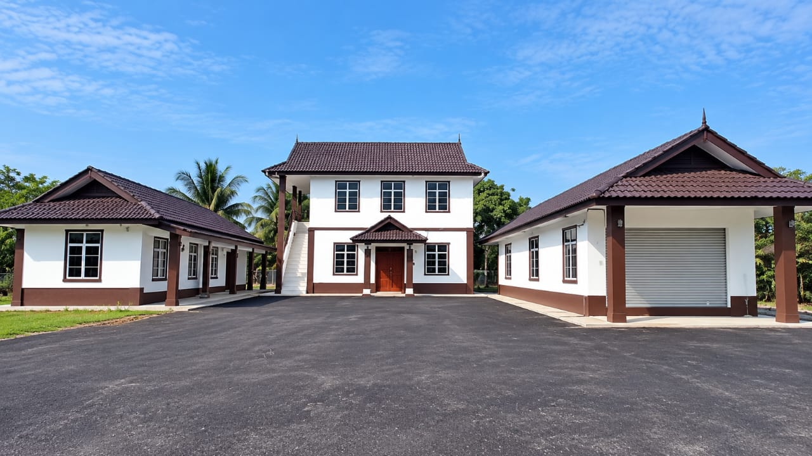
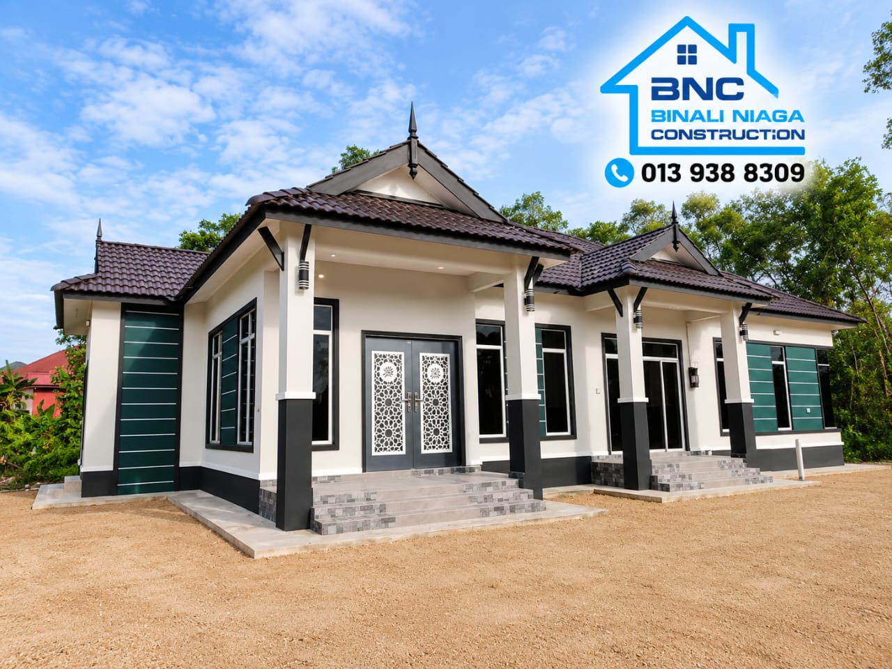
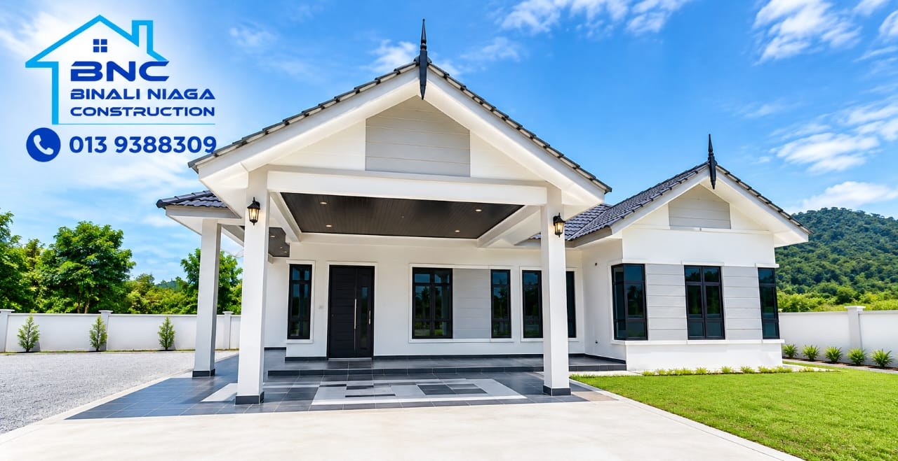

Rumah impian.
Dibina dengan penuh keyakinan.
Binali membina rumah kediaman setingkat moden untuk keluarga di Terengganu — daripada tapak, kepada struktur, sehingga ruang yang sedia dihuni.

Inilah yang Binali bina untuk anda.
Rumah baharu di atas tanah sendiri, atau ruang sedia ada yang mahu diubah. Pilih keperluan anda dan teruskan ke perbualan yang tepat.
Dari tapak
menjadi rumah.
Setiap binaan bermula dengan keputusan yang jelas — lokasi, reka bentuk, skop kerja dan bahan. Binali menyelaraskan perkara asas ini sebelum kerja bergerak ke peringkat seterusnya.
Fahami projek
Kami fahami lokasi, keadaan tanah, gaya rumah dan keperluan keluarga anda.
Selaraskan skop
Kami selaraskan skop kerja, bahan dan perkara yang perlu diputuskan sebelum binaan dimulakan.
Bina dengan arah yang jelas
Kami bergerak ke arah rumah yang lengkap — daripada fasad dan bumbung hingga ke ruang dalaman.
Ruang yang boleh dilihat, bukan sekadar janji.
Setiap rumah bermula dengan satu idea — kemudian dibina menjadi ruang yang boleh dinikmati bersama keluarga. Lihat hasil kerja Binali dan bayangkan kemungkinan untuk rumah anda.


Lihat hasil binaan Binali.
Rujuk fasad, anjung, ruang dalaman dan kemasan yang pernah dibekalkan. Setiap projek tetap bergantung pada skop dan keadaan tapak yang dipersetujui.
Lihat perkembangan Binali di media sosial.
Video, kemas kini tapak dan projek baharu dikongsi terus di platform rasmi kami. Ikuti kedua-dua saluran untuk melihat kandungan yang lebih kerap, kemudian gunakan WhatsApp apabila anda sudah bersedia untuk menerangkan projek anda. Ikuti kedua-dua saluran untuk melihat kandungan yang lebih kerap, kemudian gunakan WhatsApp apabila anda sudah bersedia untuk menerangkan projek anda.
Kita mula dengan apa yang anda tahu.
Isi maklumat ringkas. Mesej akan disediakan untuk WhatsApp supaya perbualan bermula dengan konteks yang betul. Nyatakan apa yang mahu dibina atau diubah, lokasi projek dan perkara yang sudah anda tahu. Binali boleh menyemak maklumat awal sebelum perbualan diteruskan. Nyatakan apa yang mahu dibina atau diubah, lokasi projek dan perkara yang sudah anda tahu. Binali boleh menyemak maklumat awal sebelum perbualan diteruskan.